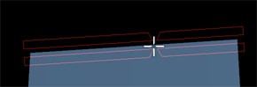
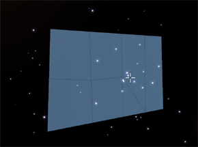

|
E D G E S P L I T
By left clicking on an edge between two unselected vertexes
you can split it. If the edge is used by a triangle it will
be split in two triangles, and if it is used by a quad it will
be split into one triangle and one quad. Continuous splits
can be created by dragging over multiple edges.

To make sure that the start edge isn't selected so that the
reshape functionality would be invoked, look for this overlay that
indicates that the edge will be split if clicked on.
|

When splitting edges the edges will emit particles indicating that the split is in progress
Sometimes you may want to create multiple splits of an edge. To do this tap repeatedly on the
right mouse button while you are splitting to increase the number of splits.
|
Once you have increased the number of splits you can press the middle mouse button to decrease the number of splits. Increasing and decreasing the number
of splits can be done while you make a continues split to vary the number of splits in different areas of your model.
|